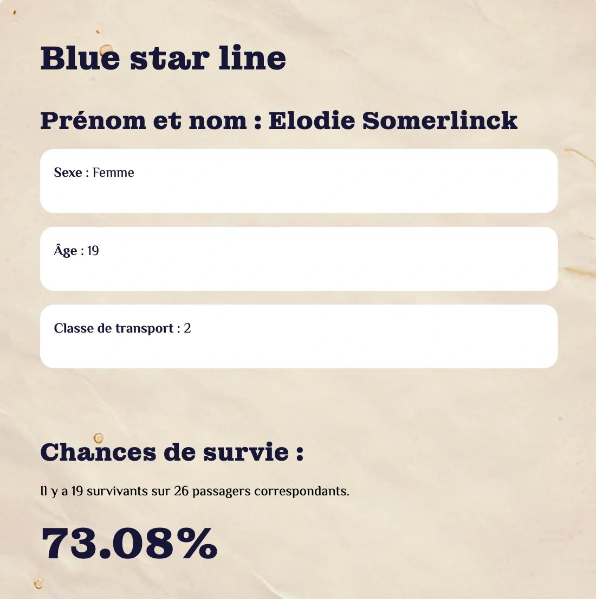

Un site web sur le Titanic : quoi de mieux pour se replonger dans le passé tout en restant dans le présent ?
Notre équipe, constituée de quatre étudiants webdesigners, a relevé le défi de créer un site web en exploitant une base de données.
Nous avons choisi de travailler sur le thème des survivants du Titanic, afin d’en apprendre davantage tout en créant un site ludique et accessible à tous.
Par Alyssa B, Danica D, Thomas B, et moi-même Élodie S.
Nous avons emprunté plusieurs chemins avant d’arriver à ce résultat final.
D’abord, nous voulions que le Titanic coule quand l’utilisateur scroll, mais la piste a été écartée, car ce n’était pas vraiment pertinent pour le sujet.
Ensuite, nous voulions faire éventuellement un modèle en 3D. Malheureusement, le temps était trop court pour créer une maquette de cette ampleur.
Néanmoins, nous avions trouvé l’idée d’une expérience immersive.
Oui, c’est ça : achetez votre ticket pour embarquer, voyez où vous allez dormir, sur quel pont allez-vous vous balader !
On vous raconte où se trouvent les cuisines, les piscines, à travers des schémas interactifs.Et pour finir sur une note glacée : retournez votre ticket pour voir votre chance de survie.
On a choisi de se rapprocher des couleurs froides, les icebergs et l’eau gelée.
Plusieurs croquis ont été réalisés pour le logo de notre site, et on a choisi de prendre quelque chose de moderne.
Il m’a fallu de la précision et de la minutie pour réaliser les plans.Nous avons revêtu notre casquette d’architecte !
Un visuel de notre site a été construit dans Figma, simple à utiliser car nous pouvions travailler en même temps, ce qui a fait bien évoluer le design.
Beaucoup de recherches ont été effectuées, notamment pour le contenu.Personnellement, ça m’a permis de tout connaître sur le Titanic et d’ajuster notre base de données pour coller plus avec la réalité.Effectivement, des personnes ont été rajoutées, notamment des enfants, car ils n’étaient pas pris en compte dans le jeu de données.
Nous avons codé pour rendre notre projet concret.
On a utilisé GitHub pour pouvoir travailler en même temps sur un projet.
Ensuite, les animations sont la base du projet pour plus d’immersion et pour garder l’attention de l’utilisateur.
Et enfin, les statistiques sont basées sur un fichier JSON modifié pour coller avec les vraies statistiques.
Il a fallu faire la promotion de notre site auprès des professeurs et des élèves.Et on a choisi la même idée que notre site : l’immersion.
Costumes et sons d’époque pour attirer les regards et intriguer.Affiches et roll-up pour montrer notre charte graphique.Nous avons refait vivre le Titanic.
Il nous a permis de créer un site web en équipe, et d’utiliser (et apprendre à utiliser) des applis qui vont dans ce sens, comme GitHub et Figma.
S’entraider et se sentir soutenu.
De mon côté, j’ai pu compter sur l’équipe pour m’aider à faire les visuels.On demande de l’aide quand on en a besoin.
Faire des recherches poussées et concrètes, et se découvrir de nouvelles passions. Je connais tout sur le Titanic !
Et surtout: bien s’amuser.Comprendre et résoudre des problèmes de code, parfois tout bêtes, mais quand il y a quatre cerveaux, ça va plus vite.